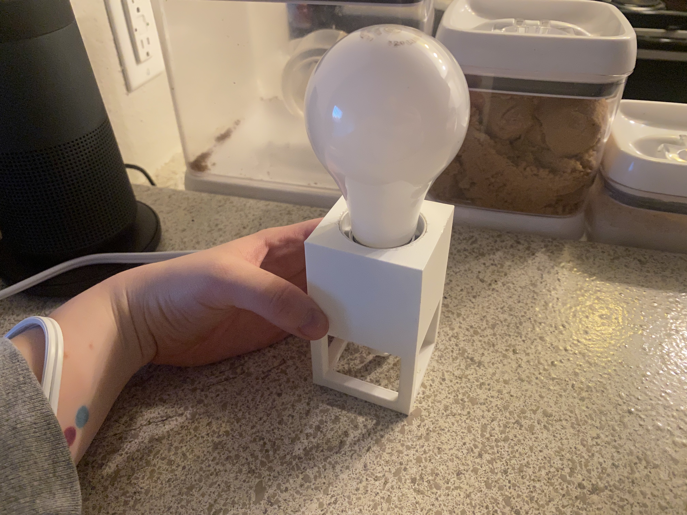
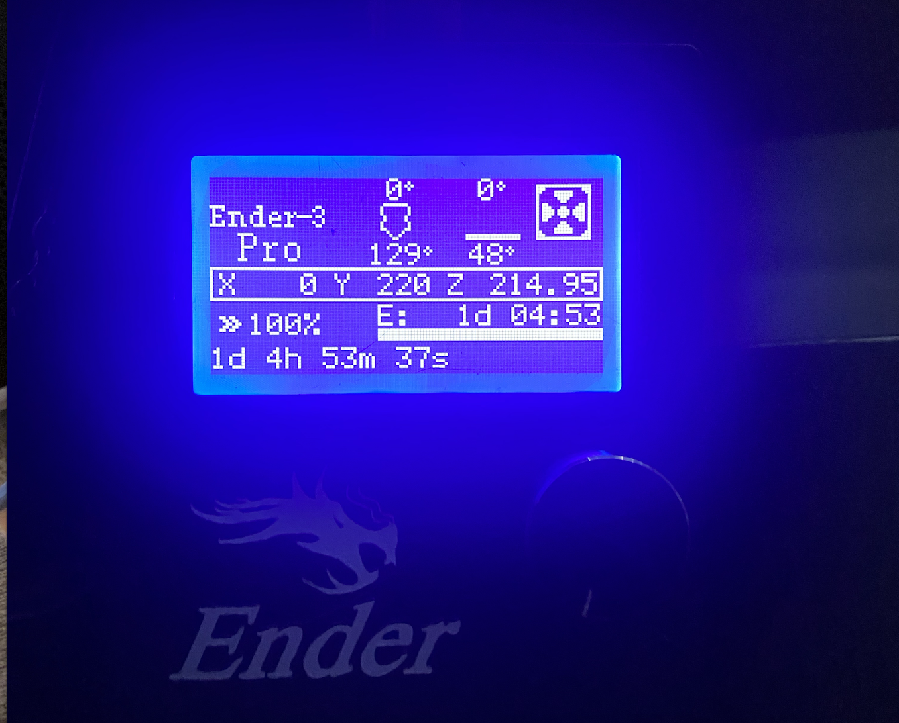
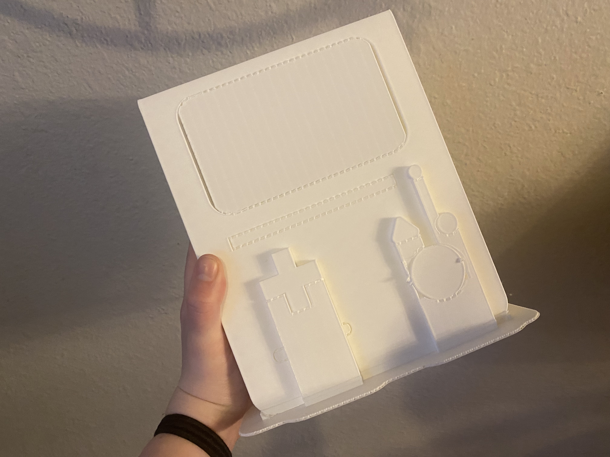
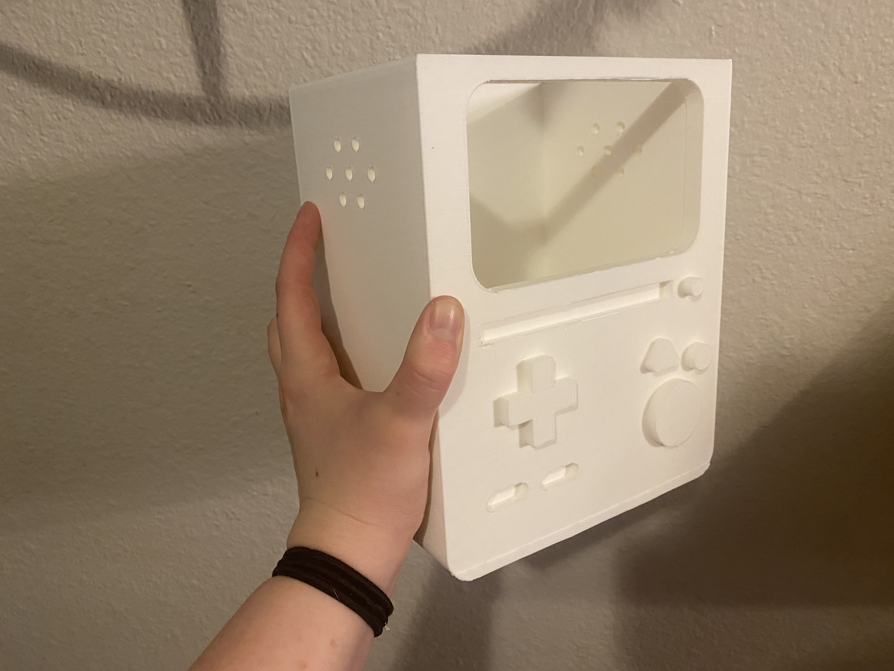
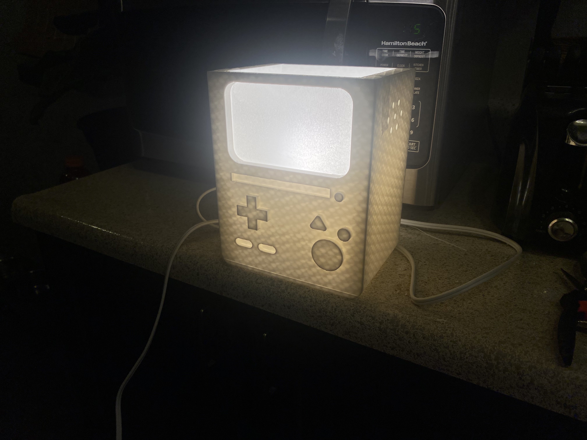
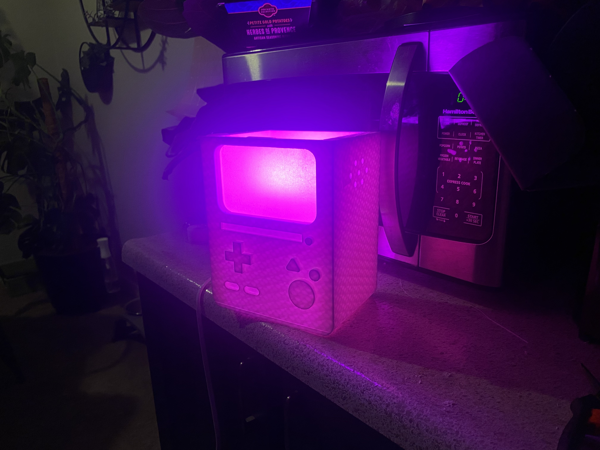
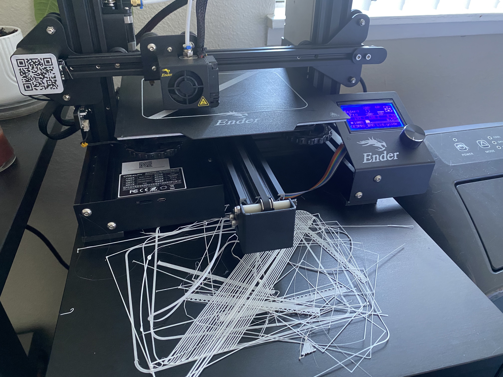
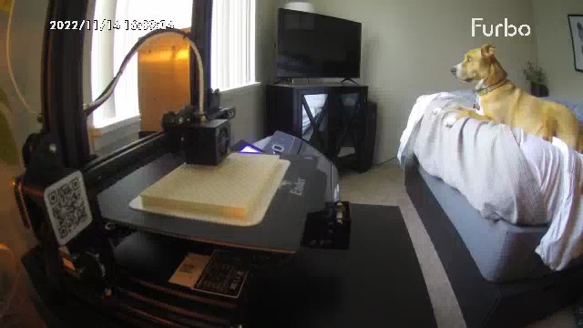

A6: Lamps!
By Jessica Hord
Documentation
For this project, I wanted to have a bit more fun. I decided to try and make BMO from Adventure Time for my lamp.

First, I grabbed some inspiration from the internet, and then I drew some outlines in Illustrator. I exported those lines as a DXF file and opened them in Rhino. From there, I extruded and built the piece through Boolean Difference and Boolean Union.


It took a few tries and patching some holes, but I was able to make a shape that looks like him!


After that, I did some measurements and made a holder for the lightbulb and cord, as well as adding the holes on the side where the light will shine through.

I printed the lightbulb holder first since it was the most important piece. The first print was successful because I realized I designed it in a way where I couldn't actually get the piece through *face palm*. I was able to tell from it that the hole I created for the bulb connector was perfectly sizd though. I also realized through this that my supports were waaaaay too strong and difficult to remove. So I made some adjustments and reprinted. Here is the successful holder.

After this I made a little slot in the main structure for it to sit and printed the main structure. I adjusted the support settings to lines and 8% density so that they would be easier to remove. This print took a very long time and I had to use my Dog Camera to watch it while I left.
One thing I noticed was that the entire print did not print. I looked up the max height for Ender 3 Pro and Cura said my file was fine, but it stopped printing. That ended up being okay and I just designed the lid based on the flat top.




After that I did a test with tape to see how the parchment paper would work, and it turned out even better than I imagined! It also has enough room to switch out different types of light bulbs, so I put in a Phillips Hue.


After this worked I sanded it with various sandpapers and super glued the parchment screen in. I decided not to do a cowboy hat because I liked the more minimal look of this, and designed a new lid for it. The cowboy hat mesh kept breaking on me anyways. Then, the issues began...
1. The gears in the filament feeder are not moving. I try a lot of things. Turns out it somehow got unplugged.
2. I start having adhesion issues, which I've never had. I re-level the bed. Doesn't work. I keep re-leveling until it's literally perfect and finally adhereing, takes an hour and half. I make sure the filament is extruding and there's no clog.
3. I go to print again. It still doesn't adhere, I'm getting upset. I take a break.
4. Did my cat do this?
5. I think maybe a raft will help. The raft doesn't adhere.
6. I rack my brain and think to turn it up to 60 degrees for the bed. THIS WORKS. I have to leave and watch it on the Dog Camera again.
Pictures of the experience.



After this, it was done!
For this assignment, I also worked on my mold.
Source Files
Full Rhino File (All Pieces)Body STL
Body Cura File
Body gCode
Light Bulb Stand STL
Light Bulb Stand Cura File
Light Bulb Stand gCode
Lid STL
Lid Cura File
Lid gCode